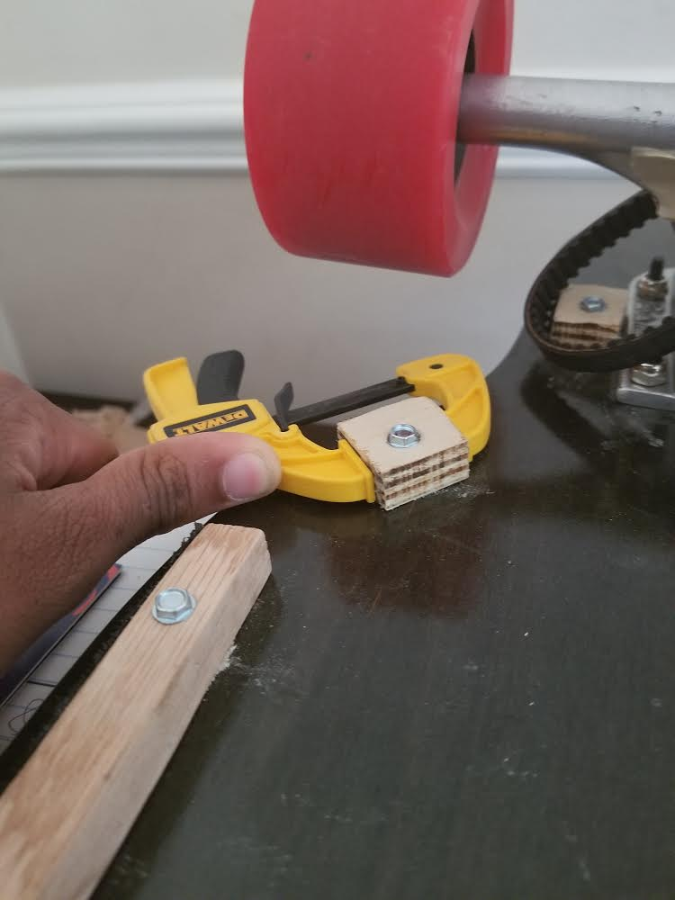
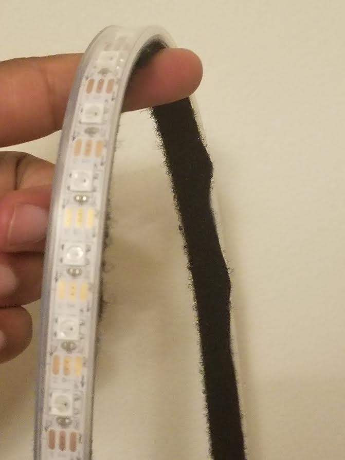
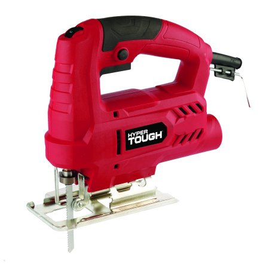

Do It Right: Attaching Lights to The Longboard
Written 7/15/2018
Edited 7/16/2018
Out of all of the bits and pieces of this electric longboard project,
working with lights has been one of the most difficult and exciting parts.
Disclaimer, yes my friend Shihao did the
mechanical assembly for the motor, but still - a lot of longboards have
nice motors, not a lot of longboard have wicked lights. So let's dive in.
I've included a list of parts at the end.
Light Fixture #0 For my first attempt at attaching lights to the longboard, I cut out small squares of wood using my highschool's bandsaw. Then I hot glued the squares onto the longboard, and the lights onto the squares. At first it worked out... but the hot glue connections would suddenly come loose.

Light Fixture #1 Hot glue wasn't working, so I turned to using wood screws. I also replaced some of the wooden squares with longer wooden strips, so there was more surface area to attach the lights. To connect the wooden pieces to the board, I would drill a pilot hole all the way through the wood and then longboard, and then I would drive the wood screws in after.


Sometimes a wood screw would go all the way through the longboard, making for a dangerous point
that came up through the grip tape, so I ground the points down with a dremel.

Applying Velcro Cutting Velcro was the messiest part of attaching the lights. After just one cut, Velcro's industrial strength adhesive catches in scissors. I used a pair of Cutco Super Shears to start each cut of the Velcro, but did the rest of the cut with an X-Acto knife. Before putting velcro on the wooden blocks, I cleaned the blocks with rubbing alcohol and let them dry.
There are two parts to velcro. The fuzzy part is called the "loop" side - it resembles a carpet, which is made up of loops. The stiffer side is called the "hook" side. Generally the loops pick up trash more easily, and need to be replaced more often - so they are put on the side where the Velcro is easier to replace. I thought it would be easier to replace the Velcro on the lights, so I put the loops on the lights, and the hooks on the board.


After that, I was done! Next it was time to perfect the programming for the lights.

Front View
I may add headlights

Bottom View
The longer pieces of wood were a great addition

Top View
The lights are almost invisible from the top

Side View
Parts
- Wood (~1/2" thick) - This is for mounting the lights. I got some for free from a scrap pile at school,
and then used part of a bigger plank I'd gotten for $10 at home depot.

- LED RGB Strip - Addressable, Sealed (1m) (2x) - I got these from sparkfun for $50 total.
These are WS2812s, with a wire for ground, power, and data. LEDs with two data wires
(5060 LEDs) will probably play better with other arduino accessories, but check the reviews
on durability first, and decide if you want your lights to be addressable
(i.e do you want cool patterns, i.e. yes).

- 1" Self-Drilling Wood-Screws - To connect the light fixtures to the board! I got 100 of these
from Home Depoot for $8, although I can't find them on the website. It's okay if the screws
aren't self-drilling.

- 4 ft. x 2 in. Industrial Strength Velcro - This stuff is great, so the $10 is worth being
able to safely attach and detach your $50 worth of ligts.

Tools
- Jig Saw - A bandsaw or even handsaw will work, but you need to be able to cut 1/2" thickwood, so
I got a Hypertough jigsaw from walmart for only $20.
 - Electric Drill - If you can drill by hand, congratulations - you'll be connecting 1/2" thick
pieces of wood together. Again I went with Hypertough, it was the cheapest I saw at Walmart, at $20. Mine
is corded, cordless drills are generally more expensive.

- Drill Bit Set - I only ended up using the 7/64" drill bit and the 1/4" hex drive bit, but I'm sure the
109 piece drill bit set I got for $13 will come in handy again.

- Dremel - I used the Dremel as a grinder and sander. I got it from Walmart for $20.